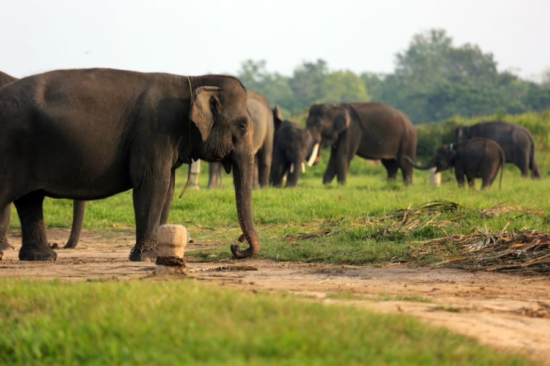

Tentang Way Kambas
Taman Nasional Way Kambas (TNWK) adalah taman nasional perlindungan gajah yang terletak di daerah Lampung tepatnya di Kecamatan Labuhan Ratu, Lampung Timur, Indonesia. Selain di Way Kambas, sekolah gajah (Pusat Latihan Gajah) juga bisa ditemui di Minas, Riau. Gajah Sumatra (Elephas maximus sumatranus) yang hidup di kawasan ini semakin berkurang jumlahnya.
Taman Nasional Way Kambas berdiri pada tahun 1985 merupakan sekolah gajah pertama di Indonesia. Dengan nama awal Pusat Latihan Gajah (PLG) namun semenjak beberapa tahun terakhir ini namanya berubah menjadi Pusat Konservasi Gajah (PKG) yang diharapkan mampu menjadi pusat konservasi gajah dalam penjinakan, pelatihan, perkembangbiakan dan konservasi. Hingga sekarang PKG ini telah melatih sekitar 300 ekor gajah yang sudah disebar ke seluruh penjuru Tanah Air. Di Way Kambas juga tedapat International Rhino Foundation yang bertugas menjaga spesies badak agar tidak terancam punah.


Sejarah Way Kambass
Sejarah Taman Nasional Way Kambas adalah satu dari dua kawasan konservasi yang berbentuk taman nasional di Propinsi Lampung selain Taman Nasional Bukit Barisan Selatan (TNBBS). Yang ditetapkan melalui Surat Keputusan Menteri Kehutanan Nomor 670/Kpts-II/1999 tanggal 26 Agustus 1999, kawasan TNWK mempunyai luas lebih kurang 125,631.31 ha.
Secara gaeografis Taman Nasional Way Kambas terletak antara 40°37’ – 50°16’ Lintang Selatan dan antara 105°33’ – 105°54’ Bujur Timur. Berada di bagian tenggara Pulau Sumatera di wilayah Propinsi Lampung. Pada tahun 1924 kawasan hutan Way Kambas dan Cabang disisihkan sebagai daerah hutan lindung, bersama-sama dengan beberapa daerah hutan yang tergabung didalamnya.
Berdasarkan sejarah Pendirian kawasan pelestarian alam Way Kambas dimulai sejak tahun 1936 oleh Resident Lampung, Mr. Rookmaker, dan disusul dengan Surat Keputusan Gubernur Belanda tanggal 26 Januari 1937 Stbl 1937 Nomor 38.
Pada tahun 1978 Suaka Margasatwa Way Kambas diubah menjadi Kawasan Pelestarian Alam (KPA) oleh Menteri Pertanian dengan Surat Keputusan Menteri Pertanian Nomor 429/Kpts-7/1978 tanggal 10 Juli 1978 dan dikelola oleh Sub Balai Kawasan Pelestarian Alam (SBKPA).
Kawasan Pelestarian Alam diubah menjadi Kawasan Konservasi Sumber Daya Alam (KSDA) yang dikelola oleh SBKSDA dengan luas 130,000 ha. Pada tahun 1985 dengan Surat Keputusan Menteri Kehutanan Nomor 177/Kpts-II/1985 tanggal 12 Oktober 1985. Pada tanggal 1 April 1989 bertepatan dengan Pekan Konservasi Nasional di Kaliurang Yogyakarta, dideklarasikan sebagai Kawasan Taman Nasional Way Kambas berdasarkan Surat Keputusan Menteri Kehutanan Nomor 444/Menhut-II/1989 tanggal 1 April 1989 dengan luas 130,000 ha.
Kemudian pada tahun 1991 atas dasar Surat Keputusan Menteri Kehutanan nomor 144/Kpts/II/1991 tanggal 13 Maret 1991 dinyatakan sebagai Taman Nasional Way Kambas, dimana pengelolaannya oleh Sub Balai Konservasi Sumber Daya Alam Way Kambas yang bertanggungjawab langsung kepada Balai Konsevasi Sumber Daya Alam II Tanjung Karang. Dengan Surat Keputusan Menteri Kehutanan Nomor 185/Kpts-II/1997 tanggal 13 maret 1997 dimana Sub Balai Konsevasi Sumber Daya Alam Way Kambas dinyatakan sebagai Balai Taman Nasional Way Kambas.
Sejarah Alasan ditetapkannya kawasan tersebut sebagai kawasan pelestarian alam, adalah untuk melindungi kawasan yang kaya akan berbagai satwa liar, diantaranya adalah tapir (Tapirus indicus), gajah Sumatera (Elephas maximus sumatranus), enam jenis primata, rusa sambar (Cervus unicolor), kijang (Muntiacus muntjak), harimau Sumatera (Panthera tigris), beruang madu. Badak Sumatera pada saat itu belum ditemukan sehingga bukan sebagai salah satu pertimbangan yang dipergunakan sebagai dasar penetapannya.
Namun demikian, setelah ditetapkannya sebagai kawasan suaka margasatwa hampir selama dua puluh tahun, terutama pada periode 1968 – 1974, kawasan ini mengalami kerusakan habitat cukup berat, yaitu ketika kawasan ini dibuka untuk Hak Pengusahaan Hutan, kawasan ini beserta segala isinya termasuk satwa, banyak mengalami kerusakan.
Dari jenis satwa tersebut, sampai dengan saat ini keberadaannya masih terjaga dengan baik, antara lain yang dikenal dengan The Big Five mammals yaitu tapir (Tapirus indicus), gajah Sumatera (Elephant maximus sumatranus), harimau Sumatera (Panthera tigris), badak Sumatera (Diserohinus sumatranus) dan beruang madu (Helarctos malayanus)
Kawasan Pelestarian Alam diubah menjadi Kawasan Konservasi Sumber Daya Alam (KSDA) yang dikelola oleh SBKSDA dengan luas 130,000 ha. Pada tahun 1985 dengan Surat Keputusan Menteri Kehutanan Nomor 177/Kpts-II/1985 tanggal 12 Oktober 1985. Pada tanggal 1 April 1989 bertepatan dengan Pekan Konservasi Nasional di Kaliurang Yogyakarta, dideklarasikan sebagai Kawasan Taman Nasional Way Kambas berdasarkan Surat Keputusan Menteri Kehutanan Nomor 444/Menhut-II/1989 tanggal 1 April 1989 dengan luas 130,000 ha.
Kemudian pada tahun 1991 atas dasar Surat Keputusan Menteri Kehutanan nomor 144/Kpts/II/1991 tanggal 13 Maret 1991 dinyatakan sebagai Taman Nasional Way Kambas, dimana pengelolaannya oleh Sub Balai Konservasi Sumber Daya Alam Way Kambas yang bertanggungjawab langsung kepada Balai Konsevasi Sumber Daya Alam II Tanjung Karang. Dengan Surat Keputusan Menteri Kehutanan Nomor 185/Kpts-II/1997 tanggal 13 maret 1997 dimana Sub Balai Konsevasi Sumber Daya Alam Way Kambas dinyatakan sebagai Balai Taman Nasional Way Kambas.
Sejarah Alasan ditetapkannya kawasan tersebut sebagai kawasan pelestarian alam, adalah untuk melindungi kawasan yang kaya akan berbagai satwa liar, diantaranya adalah tapir (Tapirus indicus), gajah Sumatera (Elephas maximus sumatranus), enam jenis primata, rusa sambar (Cervus unicolor), kijang (Muntiacus muntjak), harimau Sumatera (Panthera tigris), beruang madu. Badak Sumatera pada saat itu belum ditemukan sehingga bukan sebagai salah satu pertimbangan yang dipergunakan sebagai dasar penetapannya.
Namun demikian, setelah ditetapkannya sebagai kawasan suaka margasatwa hampir selama dua puluh tahun, terutama pada periode 1968 – 1974, kawasan ini mengalami kerusakan habitat cukup berat, yaitu ketika kawasan ini dibuka untuk Hak Pengusahaan Hutan, kawasan ini beserta segala isinya termasuk satwa, banyak mengalami kerusakan.
Dari jenis satwa tersebut, sampai dengan saat ini keberadaannya masih terjaga dengan baik, antara lain yang dikenal dengan The Big Five mammals yaitu tapir (Tapirus indicus), gajah Sumatera (Elephant maximus sumatranus), harimau Sumatera (Panthera tigris), badak Sumatera (Diserohinus sumatranus) dan beruang madu (Helarctos malayanus)